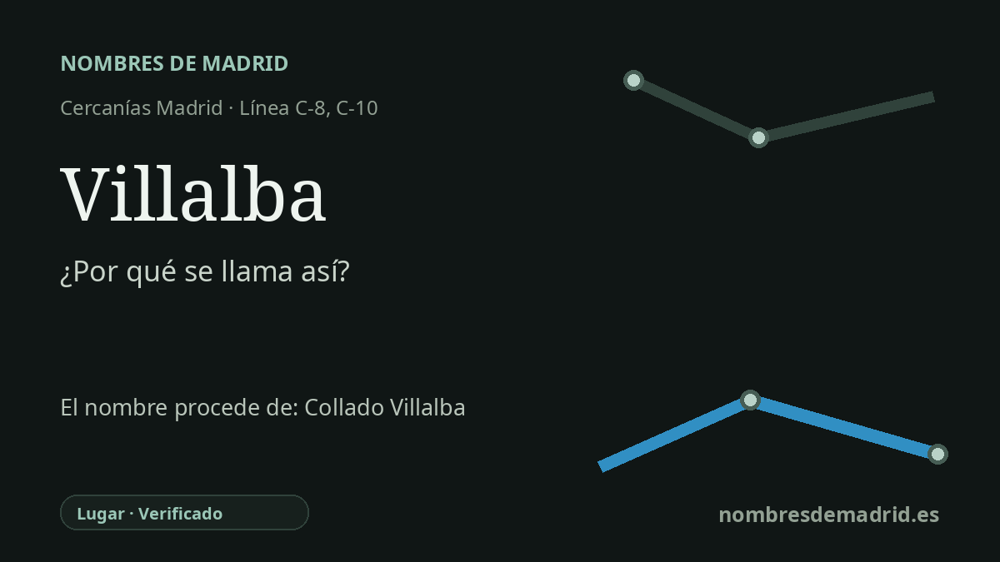

Publicado el · Investigación de Nombres de Madrid · Cómo verificamos cada origen · 6 fuentes consultadas
Respuesta rápida
La estación de Villalba toma su nombre de Villalba, el barrio ferroviario de Collado Villalba. El topónimo combina collado, un paso o elevación suave, con Villalba, una formación frecuente de villa + alba en la que alba probablemente tenía un valor propiciatorio más que una simple descripción de blancura.
La historia del nombre
El nombre de la estación procede de Villalba, la denominación vinculada al barrio ferroviario del municipio de Collado Villalba. En el sistema de transporte actual aparece a menudo la forma más completa Villalba de Guadarrama, mientras que en Cercanías y en el uso cotidiano se abrevia habitualmente como Villalba.
Detrás de ese nombre breve está el topónimo municipal más antiguo Collado Villalba. Toponomasticon Hispaniae lo considera un compuesto castellano claro: collado es una elevación suave o un paso entre alturas, y Villalba está formado por villa y alba. La precisión especializada es importante: alba no tiene por qué ser una descripción literal de un lugar blanco, sino que puede tener un valor favorable, cercano a limpio, puro o próspero.
El nombre también encaja con la geografía. Collado Villalba se sitúa en la vertiente sur de la sierra de Guadarrama, en un valle amplio en torno al río Guadarrama y rodeado por sierras, lomas y cerros. La documentación histórica reunida por Toponomasticon recoge formas como Collado Villalba en 1517, Collado de Villalba en el siglo XVII y formas oficiales posteriores, lo que muestra que el nombre no nació con el ferrocarril moderno.
El tren sí transformó, sin embargo, la parte del nombre que más viajeros llegaban a ver. La documentación urbanística histórica de Collado Villalba señala la venta de terrenos en Navaluenga a la compañía ferroviaria en 1860 y explica que el ferrocarril, situado lejos del pueblo antiguo, generó un crecimiento rápido alrededor de la estación. Ese nuevo núcleo meridional pasó a conocerse localmente como La Estación, y por eso una estación llamada simplemente Villalba remite a un topónimo compuesto mucho más antiguo.
La interpretación mejor respaldada es esta: la estación se llama así por Villalba, el barrio de la estación y forma ferroviaria de Collado Villalba, cuyo origen profundo es collado más villa alba. El papel de nudo ferroviario está documentado, con Villalba de Guadarrama en fuentes actuales de CRTM y Adif para el entorno de las líneas C-8 y C-10. La fecha exacta de asignación del nombre no consta en la documentación ferroviaria disponible.